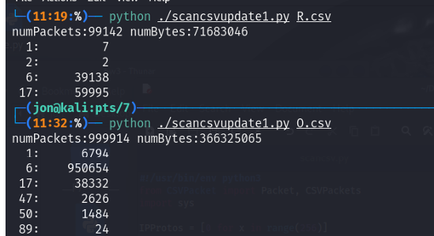
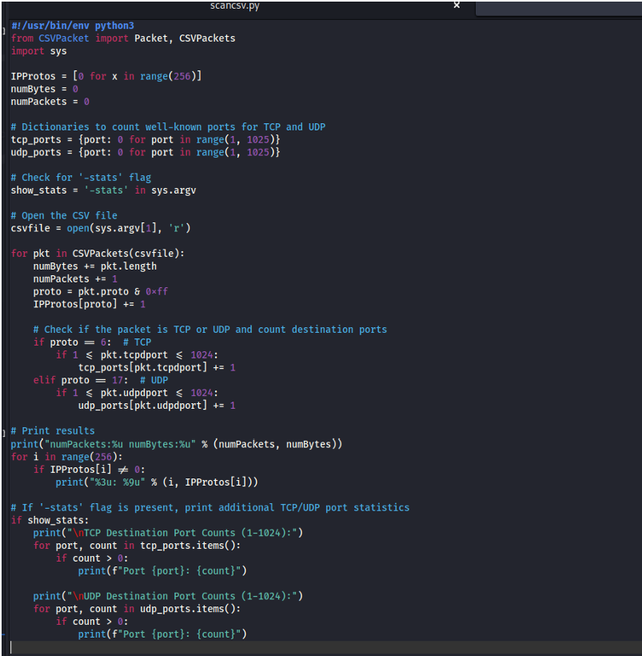
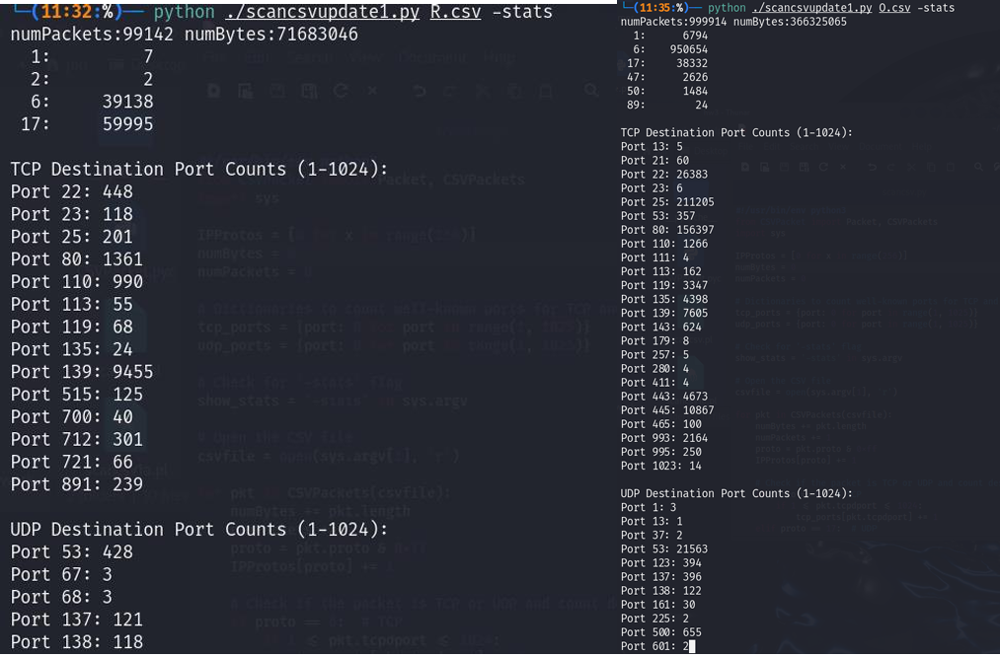
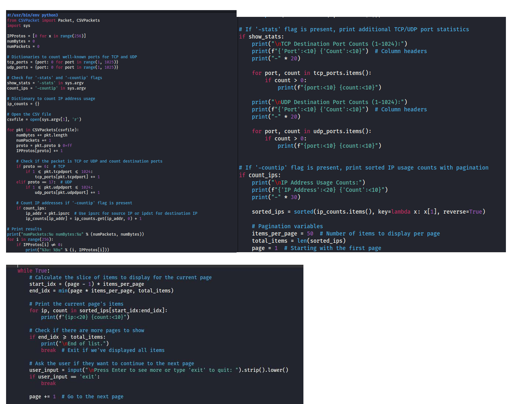
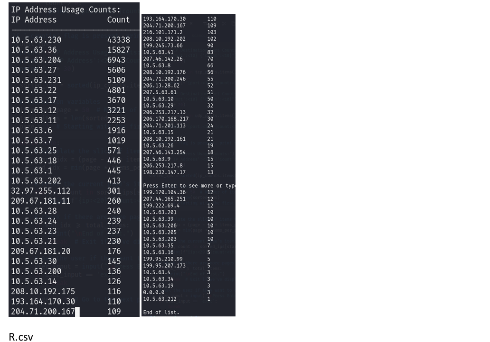
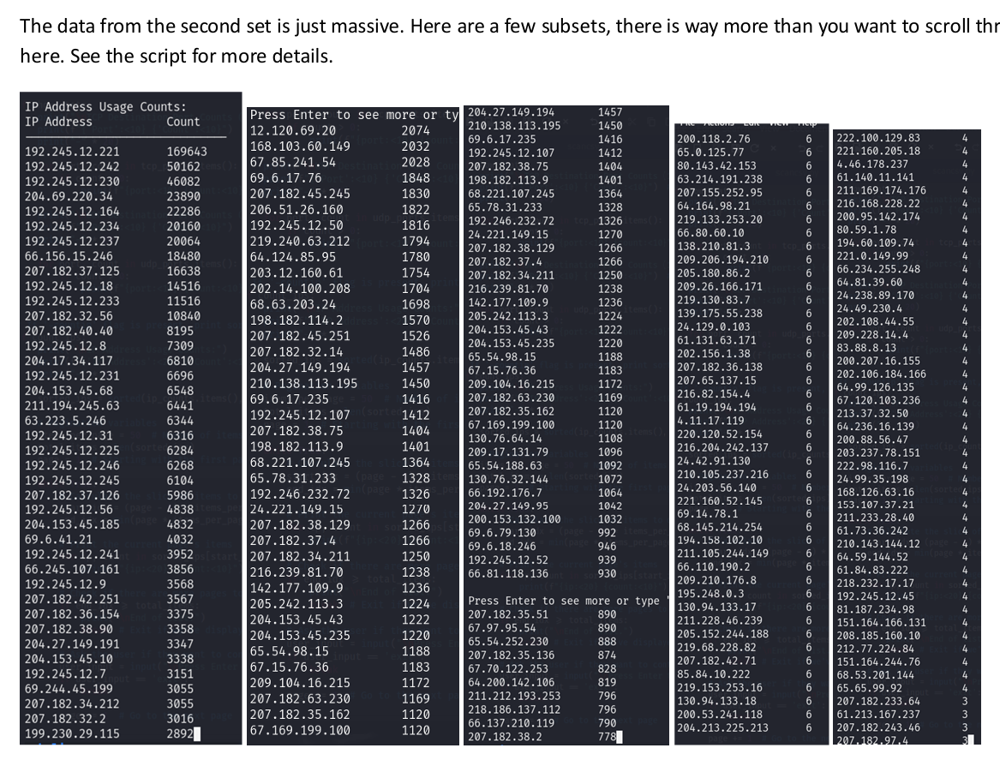

We often wish to examine network traffic to analyze whether a given network is running correctly, is under attack, has secrets in it we would like to reveal or protect, and so on. There is an engineering tradeoff here. We can’t store and analyze all the data that flies by in the network. So we would like to use a portion of the total data to decide where to look deeper.
Often the initial security analysis uses protocol headers or security and application logs.
This information is small, so it can be stored for more traffic over a longer period of time.
This information can be determined from packets flying by with a minimum of processing, so it is possible to get the info without either spending a fortune in monitoring hardware or slowing down the network traffic.
There is a perception that the content data is “sensitive” and that header data is “anonymized” or information that people don’t care as much about. If you had time to read the Kieran Healy’s amusing article on “Using Metadata to Find Paul Revere”, you can see that this is not always a valid perception.
Let’s see what we can find from the most basic packet header data. The trick here is to rearrange the data in various ways and look for ‘spikes’ in frequency. Then look at what all the frequent items have in common, such as the same protocol, similar IP addresses, etc. To do this well, you need to know about common TCP and UDP services. Fortunately, we have Google to help us with that!
Data Overview
We have two samples of packet data, entitled ‘R’ and ‘O’. The packet data is in order, and covers a brief period of time. For each packet, you get:
Length, IP type, IP Source Address, IP Destination Address
TCP: Flags, Source port, Destination Port
UDP: Source port, Destination port
ICMP: type, code
Analysis Results
The ultimate goal of this assignment is to understand the function of the networks monitored in the R and O data sets. What is their function? We will choose among: work, home, data center, ISP. On the way, we’ll learn as much as we can about these networks from the scanty data that we have.
Protocol Analysis Starting Point

IP protocol 1=icmp; 2=igmp; 6=tcp; 17=udp. For example, ICMP (IP Protocol 1) occurs in 7 packets. Each protocol has its own uses, and we can infer network functionality from these details.
Extended Statistics and Comprehensive Network Analysis
1. Enhancing the Script with Port Statistics:
To deepen the analysis, the script now includes functionality to count the usage of well-known destination port numbers for TCP and UDP traffic (ports 1–1024) when the -stats flag is enabled. This provides detailed insights into port-specific activity across the R and O datasets.


Findings:
R.csv Analysis: Significant activity on ports 80 (HTTP), 110 (POP3), 139 (NetBIOS), 22 (SSH), 23 (Telnet), 25 (SMTP), and 53 (DNS) – consistent with a work network.
O.csv Analysis: Extremely high activity on ports 25 (SMTP), 80 (HTTP), 53 (DNS), 22 (SSH), 445 (SMB), and 135 (RPC) – consistent with ISP or data center activity.
2. IP Address Analysis



With the addition of the -countip flag, the script identifies distinct IP addresses and sorts them by usage count. This reveals valuable insights into network configurations and traffic behavior.
R.csv: Internal 10.5.x.x IPs dominate; public IPs like 199.170.104.36 indicate external gateways.
O.csv:192.245.x.x addresses dominate – central ISP infrastructure with client endpoints mixed in.
3. Network Prefix Dominance
Using -countnetwork2 and -countnetwork3 flags, dominant network prefixes were identified:
External DNS root servers contacted via 10.5.63.24
O.csv:
Mail servers: 192.245.12.242, 192.245.12.234
DNS servers: 192.245.12.56, 192.245.12.7
Web servers: Port 80 traffic dominating
Time sync servers: NTP traffic on port 123
Analysis Script
#!/usr/bin/env python3
from CSVPacket import Packet, CSVPackets
import sys
import ipaddress
IPProtos = [0 for x in range(256)]
numBytes = 0
numPackets = 0
# Dictionaries to count well-known ports for TCP and UDP
tcp_ports = {port: 0 for port in range(1, 1025)}
udp_ports = {port: 0 for port in range(1, 1025)}
# Flags to control which options are enabled
show_stats = '-stats' in sys.argv
count_ips = '-countip' in sys.argv
count_networks = '-countnetwork' in sys.argv # Flag to count network prefixes (unused here)
count_networks2 = '-countnetwork2' in sys.argv # Top 10 networks (2-octet network prefix)
count_networks3 = '-countnetwork3' in sys.argv # Top 10 networks (3-octet network prefix)
count_other = '-other' in sys.argv # Flag for GRE, IPSEC, OSPF filtering
count_to = '-connto' in sys.argv # Flag for counting connections to specific ports
# Dictionaries to count IP address usage for specific protocols
gre_ips = {}
ipsec_ips = {}
ospf_ips = {}
ip_counts = {}
network_counts2 = {} # For 2-octet network prefixes
network_counts3 = {} # For 3-octet network prefixes
# Dictionary to track connections to each destination IP address
conn_to = {} # {ipdst: {proto, dport}: set of src-ip-src-port}
# Open the CSV file
csvfile = open(sys.argv[1], 'r')
# Iterate through packets and gather stats
for pkt in CSVPackets(csvfile):
numBytes += pkt.length
numPackets += 1
proto = pkt.proto & 0xff
IPProtos[proto] += 1
# Check if the packet is TCP or UDP and count destination ports
if proto == 6: # TCP
if 1 <= pkt.tcpdport <= 1024:
tcp_ports[pkt.tcpdport] += 1
elif proto == 17: # UDP
if 1 <= pkt.udpdport <= 1024:
udp_ports[pkt.udpdport] += 1
# Count IP addresses if '-countip' flag is present
if count_ips:
ip_addr = pkt.ipsrc # Use ipsrc for source IP or ipdst for destination IP
ip_counts[ip_addr] = ip_counts.get(ip_addr, 0) + 1
# Count protocol-specific IPs if '-other' flag is present
if count_other:
# GRE (protocol 47)
if proto == 47:
gre_ips[pkt.ipsrc] = gre_ips.get(pkt.ipsrc, 0) + 1
gre_ips[pkt.ipdst] = gre_ips.get(pkt.ipdst, 0) + 1
# IPSEC (protocol 50 or 51)
elif proto in [50, 51]:
ipsec_ips[pkt.ipsrc] = ipsec_ips.get(pkt.ipsrc, 0) + 1
ipsec_ips[pkt.ipdst] = ipsec_ips.get(pkt.ipdst, 0) + 1
# OSPF (protocol 89)
elif proto == 89:
ospf_ips[pkt.ipsrc] = ospf_ips.get(pkt.ipsrc, 0) + 1
ospf_ips[pkt.ipdst] = ospf_ips.get(pkt.ipdst, 0) + 1
# Count network prefixes based on 2-octet and 3-octet prefixes
if count_networks2 or count_networks3:
try:
ip = ipaddress.ip_address(pkt.ipsrc) # Parse the source IP address
if count_networks2:
network_prefix2 = str(ipaddress.IPv4Network(f"{ip}/16", strict=False).network_address)
network_counts2[network_prefix2] = network_counts2.get(network_prefix2, 0) + 1
if count_networks3:
network_prefix3 = str(ipaddress.IPv4Network(f"{ip}/24", strict=False).network_address)
network_counts3[network_prefix3] = network_counts3.get(network_prefix3, 0) + 1
except ValueError:
# Handle invalid IP address formats if needed
continue
# If '-connto' flag is present, track connections by destination IP, protocol, and port
if count_to:
if proto == 6: # TCP
dport = pkt.tcpdport
elif proto == 17: # UDP
dport = pkt.udpdport
else:
continue # Skip non-TCP/UDP packets
if 1 <= dport <= 1024:
key = (pkt.ipdst, proto, dport)
src_key = f"{pkt.ipsrc}-{proto}/{dport}"
if key not in conn_to:
conn_to[key] = set()
conn_to[key].add(src_key)
# Print results
print("numPackets:%u numBytes:%u" % (numPackets, numBytes))
for i in range(256):
if IPProtos[i] != 0:
print("%3u: %9u" % (i, IPProtos[i]))
# If '-stats' flag is present, print additional TCP/UDP port statistics
if show_stats:
print("\nTCP Destination Port Counts (1-1024):")
print(f"{'Port':<10} {'Count':<10}") # Column headers
print("-" * 20)
for port, count in tcp_ports.items():
if count > 0:
print(f"{port:<10} {count:<10}")
print("\nUDP Destination Port Counts (1-1024):")
print(f"{'Port':<10} {'Count':<10}") # Column headers
print("-" * 20)
for port, count in udp_ports.items():
if count > 0:
print(f"{port:<10} {count:<10}")
# If '-countip' flag is present, print sorted IP usage counts with pagination
if count_ips:
print("\nIP Address Usage Counts:")
print(f"{'IP Address':<20} {'Count':<10}")
print("-" * 30)
sorted_ips = sorted(ip_counts.items(), key=lambda x: x[1], reverse=True)
# Pagination variables
items_per_page = 50 # Number of items to display per page
total_items = len(sorted_ips)
page = 1 # Starting with the first page
while True:
# Calculate the slice of items to display for the current page
start_idx = (page - 1) * items_per_page
end_idx = min(page * items_per_page, total_items)
# Print the current page's items
for ip, count in sorted_ips[start_idx:end_idx]:
print(f"{ip:<20} {count:<10}")
# Check if there are more pages to show
if end_idx >= total_items:
print("\nEnd of list.")
break # Exit if we've displayed all items
# Ask the user if they want to continue to the next page
user_input = input("\nPress Enter to see more or type 'exit' to quit: ").strip().lower()
if user_input == 'exit':
break
page += 1 # Go to the next page
# If '-other' flag is present, print GRE, IPSEC, and OSPF IP usage counts
if count_other:
print("\nGRE Protocol IP Address Usage Counts:")
print(f"{'IP Address':<20} {'Count':<10}")
print("-" * 30)
sorted_gre_ips = sorted(gre_ips.items(), key=lambda x: x[1], reverse=True)
for ip, count in sorted_gre_ips:
print(f"{ip:<20} {count:<10}")
print("\nIPSEC Protocol IP Address Usage Counts:")
print(f"{'IP Address':<20} {'Count':<10}")
print("-" * 30)
sorted_ipsec_ips = sorted(ipsec_ips.items(), key=lambda x: x[1], reverse=True)
for ip, count in sorted_ipsec_ips:
print(f"{ip:<20} {count:<10}")
print("\nOSPF Protocol IP Address Usage Counts:")
print(f"{'IP Address':<20} {'Count':<10}")
print("-" * 30)
sorted_ospf_ips = sorted(ospf_ips.items(), key=lambda x: x[1], reverse=True)
for ip, count in sorted_ospf_ips:
print(f"{ip:<20} {count:<10}")
# If '-countnetwork' flag is present, print network prefix counts
if count_networks2 or count_networks3:
print("\nNetwork Prefix Usage Counts (Top 10):")
if count_networks2:
print("\n2-Octet Network Prefixes:")
print(f"{'Network Prefix':<20} {'Count':<10}")
print("-" * 30)
sorted_network_counts2 = sorted(network_counts2.items(), key=lambda x: x[1], reverse=True)[:10]
for network, count in sorted_network_counts2:
print(f"{network:<20} {count:<10}")
if count_networks3:
print("\n3-Octet Network Prefixes:")
print(f"{'Network Prefix':<20} {'Count':<10}")
print("-" * 30)
sorted_network_counts3 = sorted(network_counts3.items(), key=lambda x: x[1], reverse=True)[:10]
for network, count in sorted_network_counts3:
print(f"{network:<20} {count:<10}")
# If '-connto' flag is present, track connections by destination IP, protocol, and port with pagination
if count_to:
print("\nConnections to Specific Ports (Destination IP, Protocol, Port):")
print(f"{'Destination IP':<15} {'Proto':<5} {'Port':<10} {'Source IPs':<30} {'Distinct Source IP-Ports':<20}")
print("-" * 70)
# Create a list to store the connections along with the count of distinct source IP-port pairs
connection_counts = []
for (ipdst, proto, dport), src_ips in conn_to.items():
# Count distinct source IP-port combinations
distinct_src_ips = set(src_ips)
distinct_count = len(distinct_src_ips)
# Store the result along with the distinct count and sort distinct IPs
connection_counts.append((ipdst, proto, dport, distinct_count, sorted(distinct_src_ips)))
# Sort the connections by the number of distinct source IP-port pairs in descending order
sorted_connections = sorted(connection_counts, key=lambda x: x[3], reverse=True)
# Pagination variables
items_per_page = 10 # Number of items to display per page
total_items = len(sorted_connections)
page = 1 # Starting with the first page
while True:
# Calculate the slice of items to display for the current page
start_idx = (page - 1) * items_per_page
end_idx = min(page * items_per_page, total_items)
# Print the current page's items
for ipdst, proto, dport, distinct_count, src_ips_list in sorted_connections[start_idx:end_idx]:
# Display only the first 5 IP-port pairs for distinct source IPs, add ellipses if there are more than 5
limited_src_ips_list = src_ips_list[:5]
src_ips_str = ", ".join(limited_src_ips_list)
if distinct_count > 5:
src_ips_str += ", ..."
print(f"{ipdst:<15} {proto:<5} {dport:<10} {src_ips_str:<30} count: {distinct_count:<20}")
# Check if there are more pages to show
if end_idx >= total_items:
print("\nEnd of list.")
break # Exit if we've displayed all items
# Ask the user if they want to continue to the next page
user_input = input("\nPress Enter to see more or type 'exit' to quit: ").strip().lower()
if user_input == 'exit':
break
page += 1 # Go to the next page